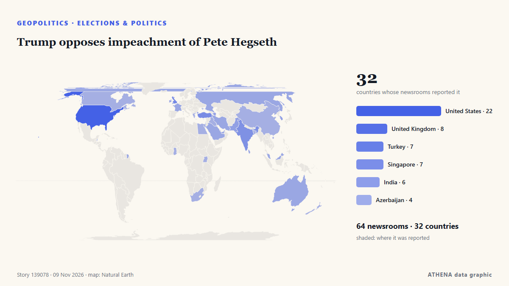

Εκλογές & πολιτική
ΧορηγούμενοΠαρουσιάζεται από  Cybernetics and Artificial Intelligence Lab Welcome to the Cybernetics and Artificial Intelligence Laboratory, established at the Department of Business Administration of the National and Kapodistrian University of Athens. The lab is headed by Professor Dimitrios Thomakos. The lab aims to do research that can be published in top venues. Our research uses tools and methods of Artificial Intelligence, and lies in the following areas: - Forecasting - Decision making - Cyber security - Finance We are always looking forward to collaborating with exceptional students!
Cybernetics and Artificial Intelligence Lab Welcome to the Cybernetics and Artificial Intelligence Laboratory, established at the Department of Business Administration of the National and Kapodistrian University of Athens. The lab is headed by Professor Dimitrios Thomakos. The lab aims to do research that can be published in top venues. Our research uses tools and methods of Artificial Intelligence, and lies in the following areas: - Forecasting - Decision making - Cyber security - Finance We are always looking forward to collaborating with exceptional students!
| 27 Οκτ | 0 |
|---|---|
| 28 Οκτ | 1 |
| 29 Οκτ | 1 |
| 30 Οκτ | 1 |
| 31 Οκτ | 1 |
| 1 Νοε | 1 |
| 2 Νοε | 0 |
| 3 Νοε | 3 |
| 4 Νοε | 2 |
| 5 Νοε | 4 |
| 6 Νοε | 3 |
| 7 Νοε | 4 |
| 8 Νοε | 1 |
| 9 Νοε | 0 |
Οι τίτλοι των ειδήσεων παρουσιάζονται στα αγγλικά, όπως δημοσιεύτηκαν.

Trump opposes impeachment of Pete Hegseth
A September address to service members at Quantico detailed Hegseth’s vision for his remaining two years in office, including expanding advanced weaponry and establishing a new overseas facility. από The Independent
Israeli President Herzog tasks Gadi Eisenkot with forming new government
The president's decision comes after 67 lawmakers endorsed Eisenkot in a round of consultations held with party representatives after the October 27 election, compared with just 46 who endorsed… από Haaretz (English)
Abdul El-Sayed defends calling Trump an 'unserious fool' as President says midterms 'a giant step back'
With New Hampshire and Georgia staying in Democratic hands, Republicans now look to Michigan for a pickup, where Democrat Abdul El-Sayed is competing with Republican Mike Rogers. από France 24 English
Just In: South Africa’s ANC slumps to 30.76 per cent of votes in worst-ever election result
Gauteng and KwaZulu-Natal account for 13 of the 20 murders involving political figures and supporters recorded during the election period, as police investigate 139 election-related criminal cases… από IOL
Israel’s president picks Netanyahu rival Gadi Eisenkot to form government
The deadlocked election had left neither Prime Minister Benjamin Netanyahu nor his strongest rival, Gadi Eisenkot, with a clear path to power. από The Independent
Trump says elections were ‘giant step back in history’ for US
Democrats captured both chambers of Congress in last Tuesday's midterms that dealt historic losses for the Republican Party in states they had dominated for decades. από Free Malaysia Today
Netanyahu rival Eisenkot to be tasked with forming new government following Israeli elections
In Israel, a candidate tasked with forming a new government has 28 days to carry out the job. από Euronews English
Spain could ‘pull out of 2030 World Cup’ if final given to Morocco
PP leader Alberto Feijoo made the pledge on TV show 'El Chiringuito, three weeks before the general election and amid tense relations with Rabat. από The Olive Press
Democratic leader Hakeem Jeffries announces bid for US House speaker
'I write to humbly request your support in connection with my candidacy to serve as the next Speaker of the House of Representatives,' says Jeffries in letter. από Anadolu Agency (English)
New Zealand poised for weeks of political wrangling after knife-edge poll
Preliminary results show Christopher Luxon's National Party winning the most seats, with a slim majority of just two when its coalition partners are included. από Free Malaysia Today
New Zealand election early count shows two main parties near deadlocked
Left-leaning parties, including Labour, are aiming to make the National Party coalition the first one-term government in nearly 50 years. από The Business Standard (Bangladesh) (working feed)
After JD Vance, now Trump Jr blames Iran war for US midterms defeat
Says war in Iran had weighed on Republican candidates, even as voters backed his handling of it. από Express Tribune
Colombian Firms Back Brazil Before Lula Win
Our experts unpack what Lula’s victory means for Brazil’s ties with Washington and how it could reshape a region trending right. από Atlantic Council
French presidential hopeful Melenchon pledges minimum wage rise, retirement at 60
PARIS, Nov 7 - Jean-Luc Melenchon, the hard-left French presidential hopeful, will pledge to raise the minimum wage and restore the country's retirement age to 60 when he launches his 2027 election… από The Straits Times
Kazakhstan president proposes admitting Russia to Organization of Turkic States
Russia’s Digital Development Ministry has proposed cutting off cellular service to smartphones brought in from abroad starting in April 2027 if their owners fail to register them by IMEI number… από Meduza (English)
Keisha Bottoms makes history as first Black woman elected US governor
Democrat Keisha Lance Bottoms and Republican Rick Jackson are running to be Georgia’s next governor in a race that could reshape control of a crucial battleground state and even make some history… από The National Herald
Pope has voted in the midterms says Vatican
(ANSA) - ROME, 30 OTT - Pope Leo XIV has voted in the US midterm elections, the Vatican said Friday. από ANSA English
What Americans are saying about how they voted in the midterm elections
Pope Leo XIV, the Catholic Church's first US-born pontiff, has voted in the United States midterm elections, submitting his mail-in ballot in Chicago, the Vatican confirmed. από RTÉ News